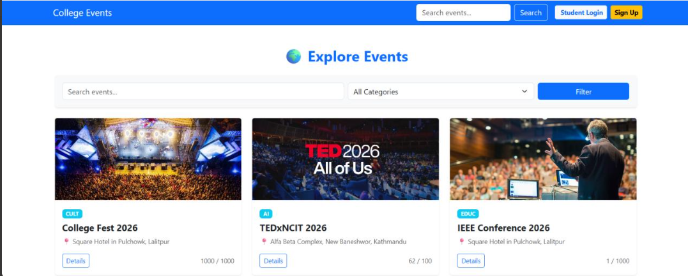
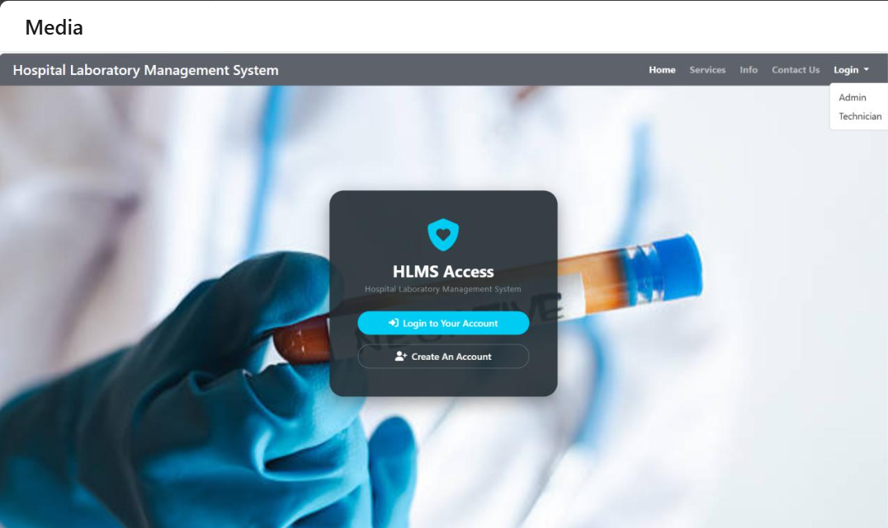
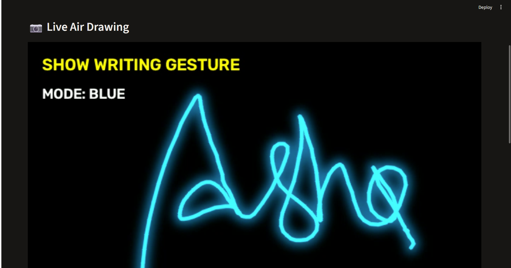

Languages
PythonJavaScriptSQLHTML5CSS3PHP
Hello, world! I'm
I'm an IT Engineering student at NCIT who enjoys turning ideas into practical software. I work with Python, Django and web technologies, and I'm exploring cloud computing and computer vision.

Curious by nature.
Building, learning, and improving one project at a time.
01 / About me
I'm an IT Engineering student at NCIT with an interest in software development, backend systems and solving real-world problems through technology.
I enjoy working across the development process — understanding a problem, designing a solution, writing code, debugging it and learning from the result. My recent work includes Django-based management systems and an interactive hand-tracking project using computer vision.
I'm continuously strengthening my fundamentals and looking for opportunities to collaborate, learn from experienced developers and contribute to meaningful software.
02 / What I work with
Technologies I've worked with through coursework, practice and projects.
Tools and practices used while building and maintaining projects.
03 / Selected work
A selection of projects that show what I've been learning and building.

HOSPITAL LAB MANAGEMENT · LOGIN INTERFACE
A Django application designed to manage campus events, student registrations, schedules and administrator workflows.

HOSPITAL LAB MANAGEMENT · LOGIN INTERFACE
A healthcare-oriented Django project focused on lab bookings, diagnostic workflows and structured data management.

LIVE DEMO · AIR WRITING · BLUE MODE
A webcam-based virtual handwriting system that lets users draw in the air with hand gestures. It combines real-time hand-landmark tracking with on-screen strokes for a touch-free writing experience.
04 / Learning & growth
EDUCATION
IT Engineering student
Add your program details, study dates and relevant coursework here.
04 / Credentials
Verified learning achievements and credentials.
Issued by Amazon Web Services Training and Certification. Recognizes completion of the AWS Academy Cloud Foundations course.
View Credential05 / Contact
I'm interested in software engineering opportunities, collaborative projects and learning from people who love building useful technology.